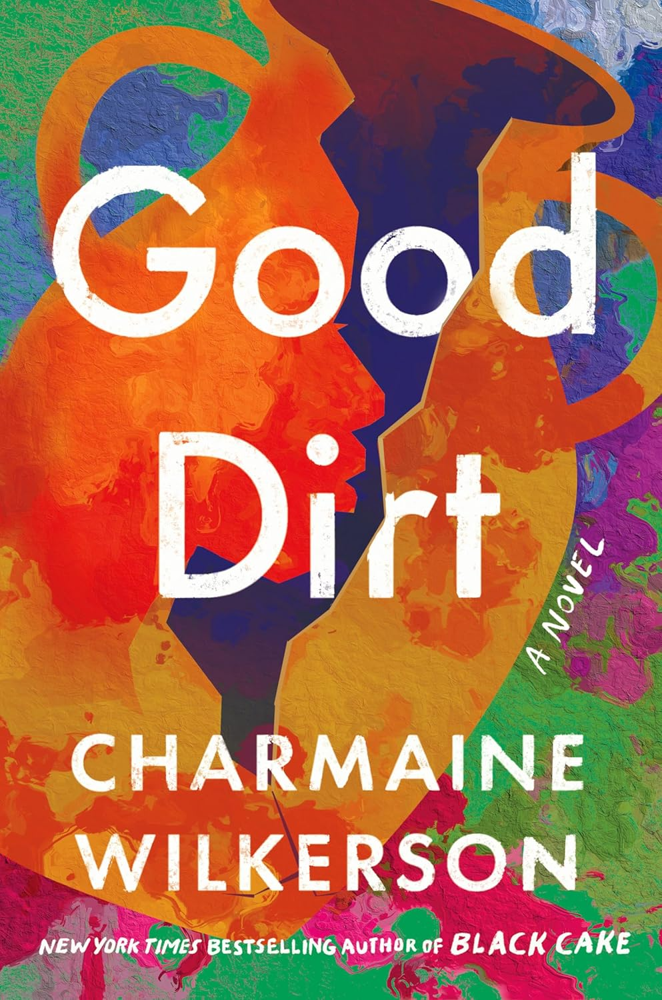

Living Legacy Book Club
Where stories, culture, and community come together.

Our Mission
Here at Living Legacy, we’re all about:
- Amplifying diverse Black voices across genres and generations
- Engaging in thought-provoking discussions beyond the page
- Building a supportive community of readers and culture lovers
- Connecting literature to real-world cultural movements
More Than a Book Club
Join us as we explore works that challenge, inspire, and reflect the richness of the Black experience.
From Harlem Renaissance classics to Afrofuturism, we celebrate the stories shaping culture and pushing literature forward.

📚 My 40 for 40 Journey
Follow along as I read 40 books this year. Scroll from where I started to where I am now.
📖 8 / 40 books completed

The Spook Who Sat by the Door

Christine
A chilling look at obsession and transformation — more psychological than expected.
💬 Was Christine evil… or a reflection of Arnie?

Brimstone
Dark, intense, and immersive — definitely pulls you into another world.
💬 Would you survive in this world?
🔐 Member Login
Let’s move beyond traditional book clubs and create a space where Black literature thrives and voices are heard.
Welcome to Living Legacy—where every read is a revolution.
📚 Book of the Month

Good Dirt
by Charmaine Wilkerson
This month’s selection explores identity, history, and generational legacy through powerful storytelling.
Discussion Prompt:
How does the past shape the way we see ourselves today?
Join Discussion💬 Discussion
Can’t make the live discussion? Share your thoughts below and be part of the conversation.